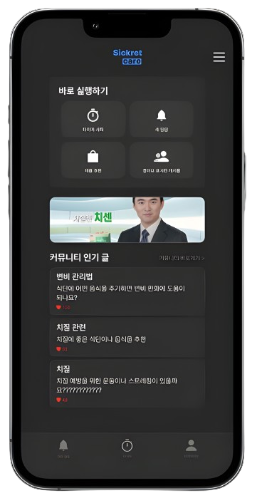

민망했던 질환,
이젠 Sickret Care 에서.
변비, 치질 그리고 과민성 대장 증후군.
남들에게 알려지는 게 정말
꺼리진 않으셨나요?
이젠 Sickret Care 에서 편하게 관리하세요.

규칙적인 일상을 통해
질환에서 벗어나세요.
타이머로 화장실에
오래 있는 걸 방지하세요.
원하는 알람을 설정하여
당신만의 루틴을
만들어보세요.
질환과 관련된
제품을 쉽게 찾아보세요.
같은 질환을 겪는 사람과
소통하여 함께
해결해나가세요.